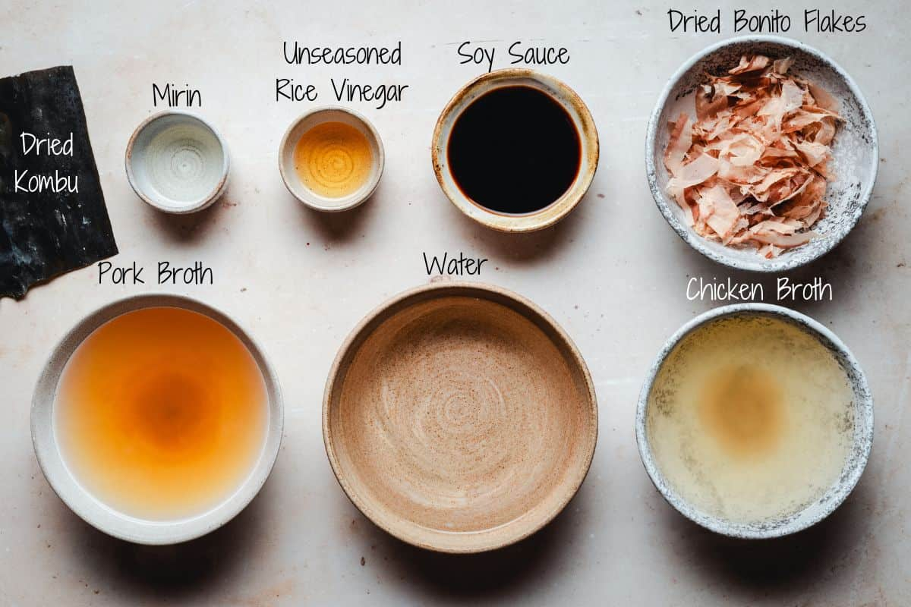

SHOYU RAMEN
Description:

Shoyu Ramen is a Japanese noodle soup with a soy sauce-based broth, offering a rich, savory, and slightly tangy flavor. It typically includes sliced pork, soft-boiled egg, seaweed, and green onions.
Ingredients:
- Soy sauce
- Chicken or pork broth
- Ramen noodles
- Chashu (braised pork belly)
- Soft-boiled egg (ajitsuke tamago)
- Nori (seaweed sheets)
- Green onions (scallions)
- Bamboo shoots (menma)
- Garlic
- Ginger
Steps:
- Prepare the broth: Simmer chicken or pork bones with garlic, ginger, and onions for several hours.
- Make the tare (flavor base): Mix soy sauce with mirin, sake, and a bit of dashi for umami flavor.
- Cook ramen noodles: Boil store-bought or fresh ramen noodles until just tender.
- Prepare toppings: Slice chashu pork, boil and marinate eggs, and cut green onions and nori.
- Strain the broth: Once rich and flavorful, strain out solids to get a clear broth.
- Mix broth and tare: Combine a spoonful of tare with hot broth in each serving bowl.
- Assemble the bowl: Add cooked noodles first, then pour the hot broth over.
- Add toppings: Place chashu, egg, bamboo shoots, nori, and green onions on top. Serve hot!